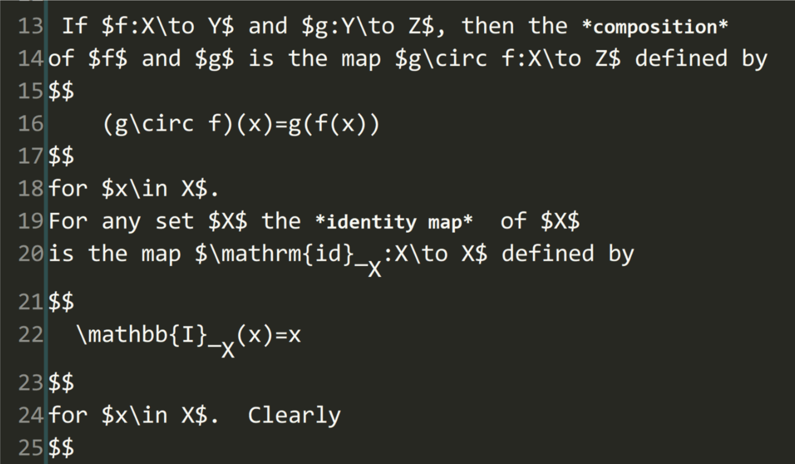

高亮Emacs Org 文件中的latex
今天才发现Emacs 中有个高亮 Org mode中latex代码的变量。不仅可以高亮Emacs Org文档中的latex，还会优化上标和下标的显示。
(setq org-highlight-latex-and-related '(latex))
这个变量的帮助文档如下：
org-highlight-latex-and-related is a variable defined in ‘org.el’. Its value is (nil) Original value was nil Documentation: Non-nil means highlight LaTeX related syntax in the buffer. When non nil, the value should be a list containing any of the following symbols: ‘latex’ Highlight LaTeX snippets and environments. ‘script’ Highlight subscript and superscript. ‘entities’ Highlight entities.
当这个变量为 nil 时，效果如下：

当这个变量为 (latex script entities) 时，效果如下：

可以看到，美元符号之间的latex代码都高亮了，另外下标和上标也都经过了优化显示。这极大的方便了使用Emacs Org写数学博客，数学公式一目了然。
如果需要在Emacs Org中preview 数学公式，Emacs也是可以做到的，有个命令 org-preview-latex-fragment . 这个命令的基本原理是把公式转变成 png 图片，然后在Org buffer中显示。这个做法我不是很喜欢，因为有新的文件生成，并且这个文件替换了原来的纯文本，当我需要修改对应的公式时，我还需要 toggle off 这个命令，稍显麻烦。